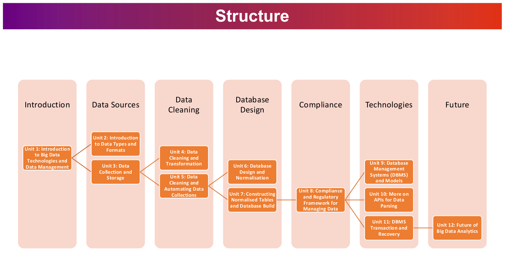

About this ePortfolio
Structuring this Portfolio
Welcome to my ePortfolio for the seminar "Deciphering Big Data". This seminar is part of the University of Essex Online's Data Science program, where we explore various aspects of big data and learn how to extract insights from it. Throughout this seminar, we will cover essential topics such as data generation, data wrangling, and database design. We will delve into the complexities of big data, its various forms and sources, and the challenges it poses. Through this ePortfolio, I aim to showcase my learning, growth, and practical application of the concepts we study. Join me as we explore the world of big data and its vast potential.
The first seminar session presented the topics that will be covered by this module. Instead of writing a singular summary for every week, this ePortfolio will group together posts, code snippets, discussion posts, and other relevant material by topic. There will be content covering every week of the unit but I will not label it by unit but by topic instead. This way, I can group together similar material without having artificial breaks in the workflow. I do this following the module structure.
The module structure (Zalzala 2023) was presented as follows:

This is the same structure I will be using for my ePortfolio. As is common for ePortfolios, I will sometimes use a slightly more informal, conversational tone instead of a strictly academic tone. Nonetheless, I shall strictly adhere to best practices regarding proper referencing and avoiding plagiarism. As I already have a background in data analytics, to make things more interesting, I have sometimes chosen to utilize other datasets or complete slightly different (and sometimes more challenging) exercises than the ones set forth in the learning platform. My professor agreed that this is acceptable as long as I demonstrate a continuous engagement with the subject material.
Sources
- Zalzala, A. (2023) Introductory Session and Group Allocation for Team Project. Available from: https://www.my-course.co.uk/course/view.php?id=9449§ion=3 [Accessed 26 January 2023].